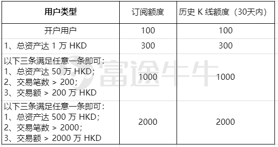
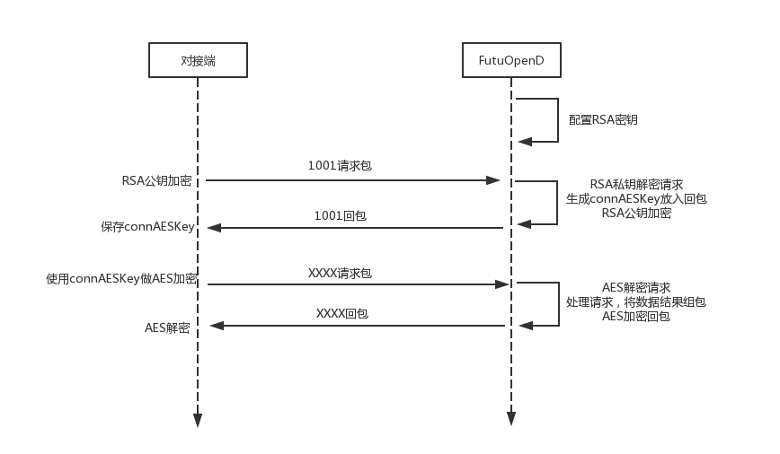
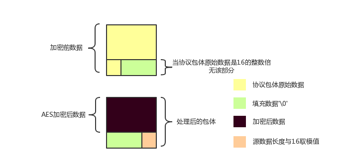

协议接口¶
- FutuOpenD是futu-api项目的网关客户端，在本机或云端成功运行后，第三方应用即可通过约定的TCP协议与之通讯，从而达到调用指定行情和交易接口的目的。
- py-futu-api 可以简化在python编程上协议通讯的复杂度，其他语言接口正在陆续开发中……
特点¶
- 基于TCP传输协议实现，稳定高效。
- 支持protobuf/json两种协议格式， 灵活接入。
- 协议设计支持加密、数据校验及回放功击保护，安全可靠。
协议清单¶
注解
- 所有 Protobuf 文件可从 futu-api Python开源项目下获取
协议请求限制¶
API用户额度¶
部分协议额度限制划分如下：

- 总资产
是指您在富途的所有资产，包括港美 A 股账户、Futu Inc. 账户、基金账户等，按照即期汇率换算成以港币为单位。
- 交易笔数
会综合您当前自然月与上一自然月的交易情况，取您上个自然月的成交笔数与当前自然月的成交笔数的较大值进行计算，即：max (上个自然月的成交笔数，当前自然月的成交笔数)。
- 交易额
是取您上个自然月的成交总金额与当前自然月的成交总金额的较大值进行计算，即：max（上个自然月的成交总金额，当前自然月的成交总金额），按照即期汇率换算成以港币为单位。其中，期货交易额的计算，需要乘以相应的调整系数（默认取0.1），期货交易额计算公式如下：
期货交易额=∑（单笔成交数 * 成交价 * 合约乘数 * 汇率 * 调整系数）
- 订阅额度
适用于订阅才可获取到的实时数据接口，每只股票订阅一个类型即占用 1 个订阅额度。
- 历史 K 线额度（30天内）
适用于历史 K 线接口，30 天内每只股票占用 1 个额度。
举例：
当前您在富途的所有资产总和折算成港币为 40 万 HKD ，上月交易笔数 250 笔，本月交易笔数 180 笔，上月交易额为 190 万 HKD，本月交易额为 150 万 HKD 。
在计算您的额度时，总资产为 40 万 HKD ，交易笔数取 250 笔，交易额取 190 万HKD。
由上表可得您的交易笔数符合大于 200 的要求，所以您的订阅额度为 1000，历史 K 线额度（30天内）为 1000 。
订阅反订阅¶
- 请求协议ID: 3001
- 支持多种实时数据类型的定阅，参见 SubType , 每支股票订阅一个类型占用一个额度。
- 额度现在限制请参见 API用户额度
- 至少订阅一分钟才可以反订阅。
- 由于港股 SF 行情摆盘数据量较大，为保证 SF 行情的速度和 OpenD 的处理性能，目前 SF 权限用户仅限同时订阅 50 只证券类产品（含 hkex 的正股、窝轮、牛熊）的摆盘（如需放开限制，请联系工作人员 https://help.futu5.com/faq/topic2348），剩余订阅额度仍可用于订阅其他类型，如：逐笔，买卖经纪等
在线获取单只股票一段历史K线¶
协议设计¶
协议数据包括协议头以及协议体，协议头固定字段，协议体根据具体协议决定。
协议头结构¶
struct APIProtoHeader
{
u8_t szHeaderFlag[2];
u32_t nProtoID;
u8_t nProtoFmtType;
u8_t nProtoVer;
u32_t nSerialNo;
u32_t nBodyLen;
u8_t arrBodySHA1[20];
u8_t arrReserved[8];
};
| 字段 | 说明 |
|---|---|
| szHeaderFlag | 包头起始标志，固定为“FT” |
| nProtoID | 协议ID |
| nProtoFmtType | 协议格式类型，0为Protobuf格式，1为Json格式 |
| nProtoVer | 协议版本，用于迭代兼容, 目前填0 |
| nSerialNo | 包序列号，用于对应请求包和回包, 要求递增 |
| nBodyLen | 包体长度 |
| arrBodySHA1 | 包体原始数据(解密后)的SHA1哈希值 |
| arrReserved | 保留8字节扩展 |
注解
- u8_t表示8位无符号整数，u32_t表示32位无符号整数
- FutuOpenD内部处理使用Protobuf，因此协议格式建议使用Protobuf，减少Json转换开销
- nProtoFmtType字段指定了包体的数据类型，回包会回对应类型的数据；推送协议数据类型由FutuOpenD配置文件指定
- arrBodySHA1用于校验请求数据在网络传输前后的一致性，必须正确填入
- 协议头的二进制流使用的是小端字节序，即一般不需要使用ntohl等相关函数转换数据
协议体结构¶
Protobuf协议请求包体结构
message C2S
{
required int64 req = 1;
}
message Request
{
required C2S c2s = 1;
}
Protobuf协议回应包体结构
message S2C
{
required int64 data = 1;
}
message Response
{
required int32 retType = 1 [default = -400]; //RetType,返回结果
optional string retMsg = 2;
optional int32 errCode = 3;
optional S2C s2c = 4;
}
Json协议请求包体结构
{
"c2s":
{
"req": 0
}
}
Json协议回应包体结构
{
"retType" : 0
"retMsg" : ""
"errCode" : 0
"s2c":
{
"data": 0
}
}
| 字段 | 说明 |
|---|---|
| c2s | 请求参数结构 |
| req | 请求参数，实际根据协议定义 |
| retType | 请求结果 |
| retMsg | 若请求失败，说明失败原因 |
| errCode | 若请求失败对应错误码 |
| s2c | 回应数据结构，部分协议不返回数据则无该字段 |
| data | 回应数据，实际根据协议定义 |
注解
- 包体格式类型请求包由协议头 nProtoFmtType 指定， FutuOPenD主动推送格式参见 FutuOpenD配置 约定的 “push_proto_type“ 配置项
- 原始协议文件格式是以Protobuf格式定义，若需要json格式传输，建议使用protobuf3的接口直接转换成json
- 枚举值字段定义使用有符号整形，注释指明对应枚举，枚举一般定义于Common.proto，Qot_Common.proto，Trd_Common.proto文件中
- 协议中价格、百分比等数据用浮点类型来传输，直接使用会有精度问题，需要根据精度（如协议中未指明，默认小数点后三位）做四舍五入之后再使用
加密通信流程¶

- 若FutuOpenD配置了加密, InitConnect 初始化连接协议必须使用RSA公钥加密，后续其他协议使用 InitConnect 返回的随机密钥进行AES加密通信。
- FutuOpenD的加密流程借鉴了SSL协议，但考虑到一般是本地部署服务和应用，简化了相关流程，FutuOpenD与接入Client共用了同一个RSA 私钥文件，请妥善保存和分发私钥文件。
- 可到”http://web.chacuo.net/netrsakeypair“这个网址在线生成随机RSA密钥对，密钥格式必须为PCKS#1，密钥长度512，1024都可以，不要设置密码，将生成的私钥复制保存到文件中，然后将私钥文件路径配置到 FutuOpenD配置 约定的 “rsa_private_key”配置项中
- 强烈建议有实盘交易的用户配置加密，避免账户和交易信息泄露
RSA加解密¶
- FutuOpenD配置 约定”rsa_private_key”为私钥文件路径
- FutuOpenD 与接入客户端共用相同的私钥文件
- RSA加解密仅用于 InitConnect 请求，用于安全获取其它请求协议的对称加密Key
- FutuOpenD的RSA密钥为1024位, 填充方式PKCS1, 公钥加密，私钥解密，公钥可通过私钥生成
- Python API 参考实现: RsaCrypt 类的encrypt / decrypt 接口
发送数据加密
- RSA加密规则:若密钥位数是key_size, 单次加密串的最大长度为 (key_size)/8 - 11, 目前位数1024, 一次加密长度可定为100
- 将明文数据分成一个或数个最长100字节的小段进行加密，拼接分段加密数据即为最终的Body加密数据
接收数据解密
- RSA解密同样遵循分段规则，对于1024位密钥, 每小段待解密数据长度为128字节
- 将密文数据分成一个或数个128字节长的小段进行解密，拼接分段解密数据即为最终的Body解密数据
AES加解密¶
- 加密key由 InitConnect 协议返回
- 使用的是AES的ecb加密模式。
- Python API 参考实现: FutuConnMng 类的encrypt_conn_data / decrypt_conn_data 接口
发送数据加密
- AES加密要求源数据长度必须是16的整数倍, 故需补‘0’对齐后再加密，记录mod_len为源数据长度与16取模值
- 因加密前有可能对源数据作修改， 故需在加密后的数据尾再增加一个16字节的填充数据块，其最后一个字节赋值mod_len, 其余字节赋值‘0’， 将加密数据和额外的填充数据块拼接作为最终要发送协议的body数据
接收数据解密

- 协议body数据, 先将最后一个字节取出，记为mod_len， 然后将body截掉尾部16字节填充数据块后再解密（与加密填充额外数据块逻辑对应）
- mod_len 为0时，上述解密后的数据即为协议返回的body数据, 否则需截掉尾部(16 - mod_len)长度的用于填充对齐的数据